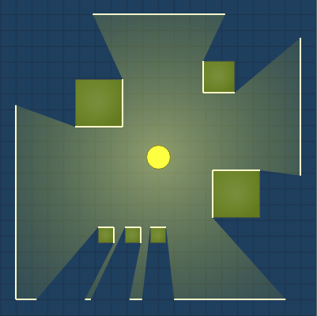

CS 357 Project
2D Visibility
Optimization
Krishna Chaitanya / ee1200206@iiti.ac.in
Surya Teja / cse1200136@iiti.ac.in
Rajkumar Paseddula / cse1100128@iiti.ac.in
2D Visibility
2D Visibility
Applications
- Game Engines
- AI Engines
- Automated warcrafts
- Security Devices
- Cameras / Videography
- Placement of sensors
- Solar Panels
- Many more..
2D Visibility
Optimization
With one source
Assumptions
- There is a single room, with no divisions or partitions in between.
- The room is assumed to be in the shape of a polygon of finite sides
2D Visibility
Area Calculation
2D Visibility Optimization
Steepest Ascent
2D Visibility - Optimization
Simulated Annealing
2D Visibility
Optimization
With multiple sources
2D Visibility
Art Gallery Problem
Proposed by Victor Klee in 1976, this problem still stays as one of the most studied and researched problems in combinatorial optimization
How many lights would we need to light up an art gallery?
Yes! Its 4!
Mathematical Formulation
Chvátal's Theorem A.K.A.
Art Gallery Theorem
|
Václav Chvátal |
[n/3] guards are always sufficient and sometimes necessary to guard a simple polygon with n vertices. |
Art Gallery Theorem
PROOF
In three steps
- Polygon Triangulation
- Graph 3-Coloring
- Recognize Minimum Occuring Color
Example Room
Polygon Triangulation
3-Coloring
Recognize Minimum Occuring Color

Thank You
Sources, citations and references,
are all listed at our GitHub repo:
https://github.com/chaitan94/2d-visibility-optimization